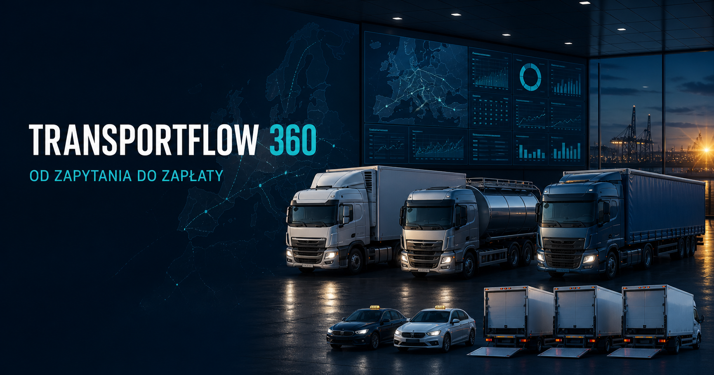

01 · TRANSPORT / FLOTA / DOKUMENTY
TransportFlow 360
Najbardziej przekrojowy projekt. Pokazuje zlecenie transportowe od zapytania i kalkulacji przez kierowcę, pojazd, dokumenty, realizację i POD aż po fakturę i KPI.
Zapytanie→Wycena→Plan→Transport→POD→Rozliczenie
